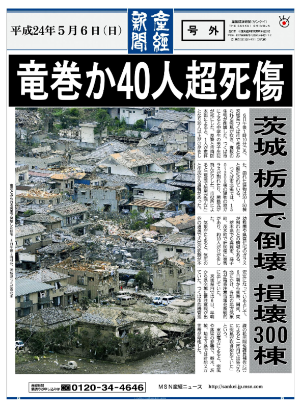
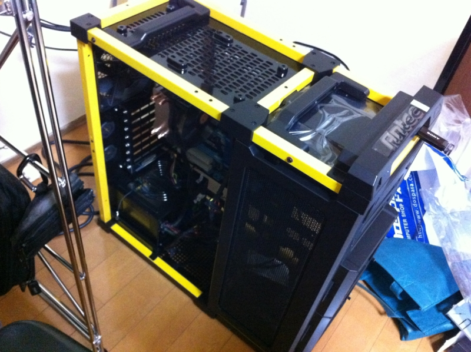
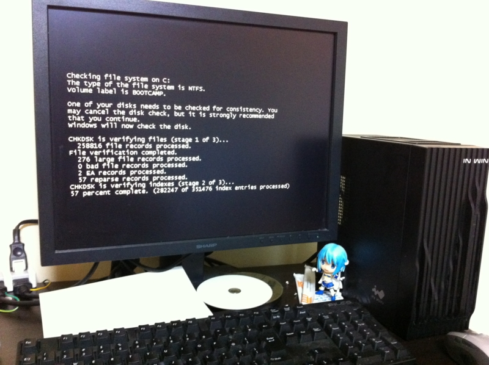
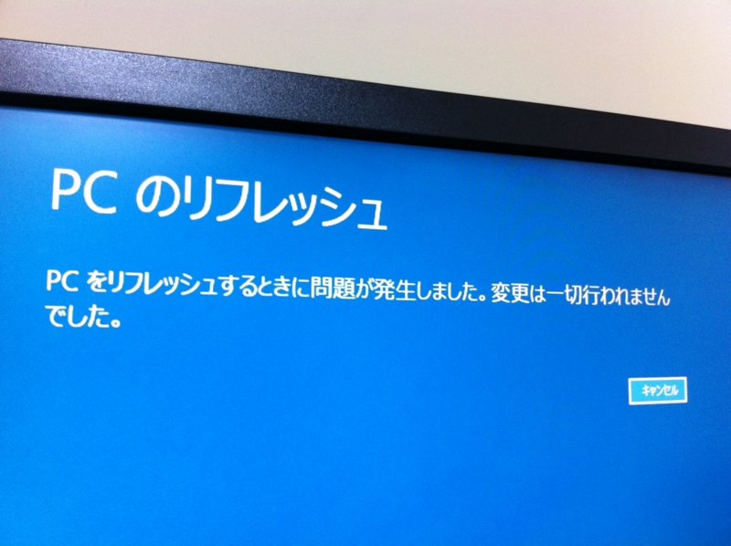
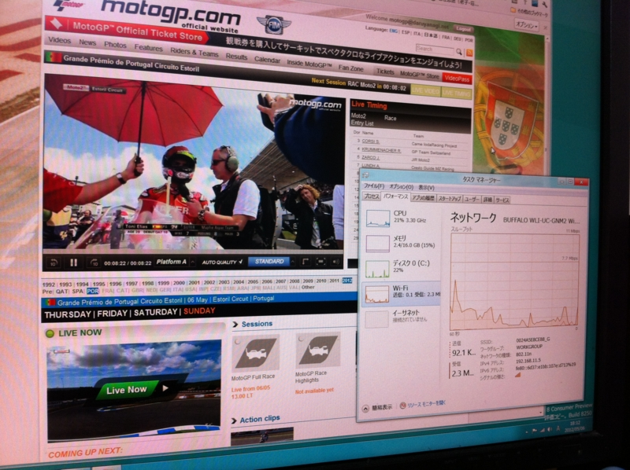

連休最終日。奮闘。
公開日：

つくばで竜巻が大変だったようで。うちは屋上で布団を干そうとして物干し台をぶっ倒し、土台が少し割れた程度の被害。大家さんに謝らないとなぁ……
連休最終日は、掃除と洗濯でもしながらのんびり過ごそうと決めていた（これまでも十分のんびりだったけど）。けれど、散らばった部屋を片付けるには、自作パーツの整理をしなければならず、そのためにはPCを組んでしまわなければならない。連休8日目。お見送りとアキバ徘徊。 - だるろぐ で買ったマザーボードも放置状態だし。結局、PCを組んで環境を構築するという、精神的にちょっと面倒な作業からは逃げられなかった。

（基本構成はこちら → 連休4日目。PCを自作した。 - だるろぐ マザーボードだけGIGABYTE intel H77 LGA1155 ATX GA-H77-D3Hへ換装してある）
以下にハマった点を――
しかたないので Windows 8 をインストールしたのだけど

Windows 8 へ Ivy Bridge のグラフィックドライバーをインストールする - だるろぐ で紹介したベータ版のグラフィックドライバーをインストールすると電源が頻繁に切断される。ディスクチェックが走りまくって心臓に悪い。
そこでOSのリフレッシュという新機能を試してみたのだけど

役に立たない。

でも、とりあえず MotoGP が始まるまでには完成。Moto2 クラスはエキサイティングだったけど、GP クラスは眠いレース展開だったので、その日はそのまま寝落ち。